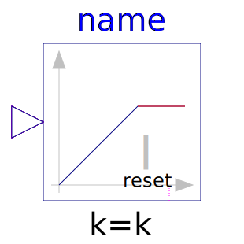
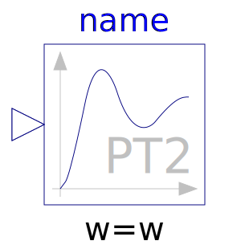
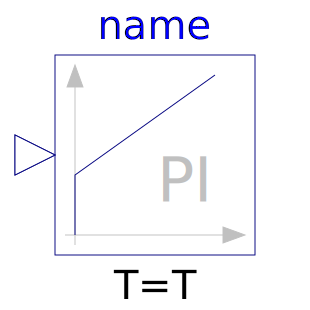
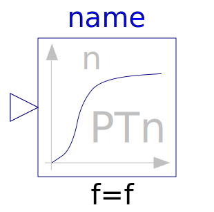

This package contains basic continuous input/output blocks described by differential equations.
All blocks of this package can be initialized in different ways controlled by parameter initType. The possible values of initType are defined in Modelica.Blocks.Types.Init:
| Name | Description |
| Init.NoInit | no initialization (start values are used as guess values with fixed=false) |
| Init.SteadyState | steady state initialization (derivatives of states are zero) |
| Init.InitialState | Initialization with initial states |
| Init.InitialOutput | Initialization with initial outputs (and steady state of the states if possible) |
For backward compatibility reasons the default of all blocks is Init.NoInit, with the exception of Integrator and LimIntegrator where the default is Init.InitialState (this was the initialization defined in version 2.2 of the Modelica standard library).
In many cases, the most useful initial condition is Init.SteadyState because initial transients are then no longer present. The drawback is that in combination with a non-linear plant, non-linear algebraic equations occur that might be difficult to solve if appropriate guess values for the iteration variables are not provided (i.e., start values with fixed=false). However, it is often already useful to just initialize the linear blocks from the Continuous blocks library in SteadyState. This is uncritical, because only linear algebraic equations occur. If Init.NoInit is set, then the start values for the states are interpreted as guess values and are propagated to the states with fixed=false.
Note, initialization with Init.SteadyState is usually difficult for a block that contains an integrator (Integrator, LimIntegrator, PI, PID, LimPID). This is due to the basic equation of an integrator:
initial equation
der(y) = 0; // Init.SteadyState
equation
der(y) = k*u;
The steady state equation leads to the condition that the input to the integrator is zero. If the input u is already (directly or indirectly) defined by another initial condition, then the initialization problem is singular (has none or infinitely many solutions). This situation occurs often for mechanical systems, where, e.g., u = desiredSpeed - measuredSpeed and since speed is both a state and a derivative, it is always defined by Init.InitialState or Init.SteadyState initialization.
In such a case, Init.NoInit has to be selected for the integrator and an additional initial equation has to be added to the system to which the integrator is connected. E.g., useful initial conditions for a 1-dim. rotational inertia controlled by a PI controller are that angle, speed, and acceleration of the inertia are zero.
| Name | Description |
|---|---|
| Output the integral of the input signal with optional reset | |
|  LimIntegrator | Integrator with limited value of the output and optional reset |
| Approximated derivative block | |
| First order transfer function block (= 1 pole) | |
|  SecondOrder | Second order transfer function block (= 2 poles) |
|  PI | Proportional-Integral controller |
| PID-controller in additive description form | |
| P, PI, PD, and PID controller with limited output, anti-windup compensation, setpoint weighting and optional feed-forward | |
| Linear transfer function | |
| Linear state space system | |
| Derivative of input (= analytic differentiations) | |
| Output the input signal filtered with a low pass Butterworth filter of any order | |
|  CriticalDamping | Output the input signal filtered with an n-th order filter with critical damping |
| Continuous low pass, high pass, band pass or band stop IIR-filter of type CriticalDamping, Bessel, Butterworth or ChebyshevI | |
| Internal utility functions and blocks that should not be directly utilized by the user |